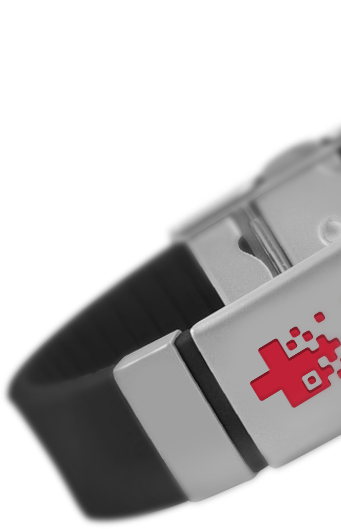
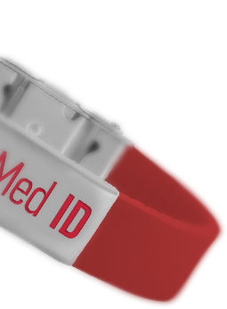

Cовременный медицинский идентификатор пациента

Мгновенный доступ
Используя систему Med ID Вы мгновенно получаете информацию о пациенте, его заболевании, а также рекомендациям к оказанию первой медицинской помощи
История обращений
Ваш лечащий врач получает доступ к вашей полной истории обращений в лечебные учереждения, назначений и лечебных процедур

Оповещение родных
При считывании данных браслета данные о считывании мгновенно передаются Вашим доверенным лицам, с передачей контактной информацией считавшего браслет
Кому мы полезны
Людям с хроническими заболеваниями
Хронические заболевания могут поставить под угрозу жизнь человека в любое время. А какую помощь нужно оказать в случае обострения болезни зачастую знают лишь близкие. Но теперь вам точно смогут помочь. Считав QR-код с браслета, тот, кто окажется рядом, получит информацию о вас, ваших близких и доверенных лицах и сможет оказать первую неотложную помощь. И тем самым спасет вам жизнь. Нужен ли вам этот браслет, решайте сами. Но не забывайте поговорку «Береженного Бог бережет».
Пожилие люди
С возрастом человек становится все более уязвимым. Если вы хоть раз слышали или читали о стариках, которые заблудились, потеряли память и не могут найти свой дом и вспомнить телефоны родных, позаботьтесь о своих родителях, бабушках и дедушках. Медицинский браслет поможет вашим родным не оказаться в затруднительной ситуации. Считав QR-код с браслета, любой человек может связаться с близкими и, в случае необходимости, передать данные о пострадавшем в службу скорой помощи. Сегодня мы заботимся о наших родителях, завтра о нас позаботятся наши дети.
Детям
Мы не можем находиться с детьми 24/7. Но мы можем обеспечить безопасность своего чада, даже когда нас нет рядом. Если ребенок потерялся в большом торговом центре, любой прохожий может отсканировать QR-код браслета, связаться с вами и помочь встретиться. Если же ваш ребенок, к примеру, получит травму на детской площадке, или ему станет плохо на улице и потребуется врачебная помощь, браслет расскажет, какая у него группа крови, на что аллергия, есть ли хронические заболевания. Эти факторы могут оказаться решающими при оказании первой помощи.
Путешественникам
Не нужно больше переживать, что вы плохо знаете язык той страны, куда собираетесь поехать. Ваш браслет все скажет за вас. В случае, если вам придется обратиться в медучреждение за рубежом, Med ID сообщит о том, кто вы, какие у вас хронические заболевания, на что бывают аллергические реакции, если ли у вас медицинская страховка. Позаботьтесь о себе в путешествии. И вы точно сможете донести до врача необходимую информацию, даже если не владеете языком.

